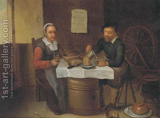

Pesachim 30 - Chametz mix
If chametz is mixed with some permitted food, it is still prohibited to be eaten on Passover - so says Rav. Of course, if you can feel its taste, then it is the same as chametz itself, but Rav was referring even to minute amounts. Why does the regular law of nullification of a small amount does not apply? This is a special decree: since normally people are accustomed to eating chametz, and since eating it leads to being cut off from one’s spiritual source, then it is better to distance people from even small admixtures of chametz.
However, Shmuel does not see a reason for this additional decree, and according to him a small admixture of chametz that is not noticeable is in fact allowed on Passover. Even Shmuel does not allow nullification if the mixtures are of the same kind, for example, bread mixed with matzah. Finally, Rabbi Yochanan is even more lenient: he allows nullification of even bread with matzah.
Correspondingly, they will differ for chametz after Passover: some will consider the mixture with its own kind forever forbidden, if owned by a Jew on Passover, while others will allow mixtures after the time of the prohibition has passed.
Rava lived after them, and therefore his view is decisive: chametz mixture is forbidden on Passover and permitted afterwards.
Art: An elderly couple eating and drinking in a tavern by (after) David Ryckaert III